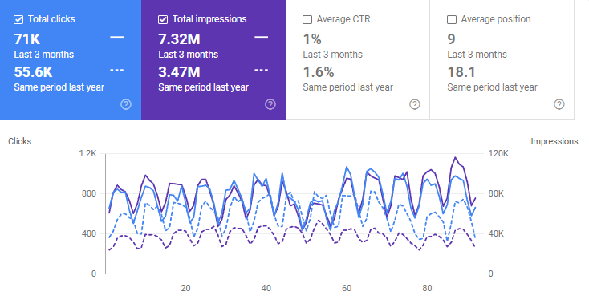

Consultor SEO
Adquirir un nuevo lead suele costar entre 5 y 7 veces más que lograr que tus actuales clientes te vuelvan a comprar. Obtener puestos altos en más consultas en buscadores te permitirá extender la presencia digital de tu negocio de forma orgánica, reduciendo el CAC y asegurando posiciones que tu competencia no te podrá robar fácilmente.
El primer paso para trabajar conmigo es contratar una auditoría
He sido reconocido por James Dooley y Karl Hudson (dos de los consultores SEO más aclamados de UK) como uno de los 20 consultores de SEO técnico más avanzados del mundo. Y FatRank me ha listado como uno de los 16 mejores consultores de SEO semántico a seguir en 2025.
(Y no, no pagué por salir en esa lista)
Por ese motivo, no tengo 100 casos de éxito que mostrarte. Porque:
Sin embargo, le pedí a uno de mis clientes recientes (he estado trabajando con él desde hace 1 año), que me permitiera mostrar los resultados que estoy generando para él - sin mostrar su nombre, ni el de su empresa.
En un año, su tráfico no sólo alcanzó el máximo histórico (a pesar de que el sitio sufrió una penalización manual y otra algorítmica), sino que su tráfico en los últimos 3 meses ha crecido en más de 30% y la visibilidad orgánica se ha duplicado.
Visión global del tráfico
Comparación tráfico año a año. El sitio tiene 400 páginas, y todas aparencen en la primera página de Google para la consulta principal.
No creo que sean resultados astronómicos. Son buenos resultados. Competimos contra gigantes que tienen miles de páginas más que nosotros, y equipos y presupuestos de 5 a 10 veces superiores. Imagina lo que podríamos hacer si tuviéramos los mismos recursos.
Te los enseño porque yo, como empresario, si fuera a plantearme hacer negocios conmigo, me gustaría, al menos, ver una prueba de que lo que hago funciona.
Así que te la entrego.
(No son ni mis vecinos, ni mis primos, ni amigos, ni tiré de contactos. Son opiniones de clientes que contacté en frío, por email, y que decidieron contratar mis auditorías):
Y este es el tipo de reacciones que normalmente me encuentro cuando presento las auditorías:
Si te interesa saber cómo puedes mejorar tu estrategia SEO para aumentar tu tráfico y extender tu alcance orgánico en internet, puedo decirte cómo hacerlo.
Reservar auditoría SEOSi no soy capaz de encontrar al menos 5 errores en tu estrategia que no sabías que estabas cometiendo, te devuelvo todo el dinero incluso tras darte el servicio.
Adicionalmente, podrás quedarte con la auditoría para darle a tu equipo el listado de errores a corregir. Sin coste.
P.D: Si te preguntas porqué mi web no posiciona en Google para palabras clave como "Consultor SEO" o parecidas, la respuesta es muy sencilla: Un 80% de mi tiempo laboral está destinado a darle buen servicio a mis clientes. El 20% restante lo empleo en mi negocio.
No tengo tiempo para trabajar mi propio SEO.
Por tanto, mi web se centra en vender.
Y mi método de adquisición de clientes es, ahora mismo, en frío.
Esa es la explicación.
Esta es la única vía para iniciar negocios conmigo ☝️